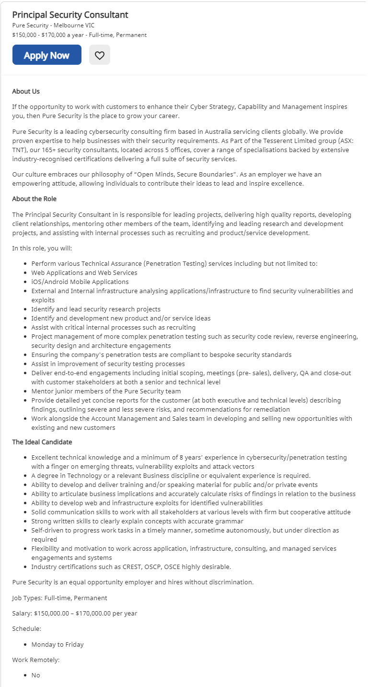

Ideal Job
Over the past few years I've begun to realise the importance of
cybersecurity jobs well into the future. Learning more about CyberSec
reminded me of all the things I love about IT - enterprise systems.
My interest in this area began on my gap year when I was successful in
becoming my schools first IT trainee. Going into the role I had only a
narrow understanding of what a career in IT would involve - I knew only
of programmers and 'IT guys'. By the end of the year, I had been able to
work on a range of projects i several fields, from network upgrades to
SoE development and deployment, to managing hypervisors and their backups.
I was hooked. So when I started digging into what was required of a
full-time cybersecurity consultant, I knew that there would be a long but
enjoyable road ahead.
Here is an example of one of my ideal, long-term jobs:

The gap year left me with strong helpdesk and customer service skills,
which I feel would be absolutely essential as a consultant. Despite this,
my technical skills and understanding are certainally underdeveloped. To
combat this, I'm studing things such as networking and cloud computing in
my own time. Formalising this study would be almost essential, especially
when it comes to being employed, as it's the simplest way to prove that
these concepts are understood and can be applied to something as
wide-reaching as cybersecurity.